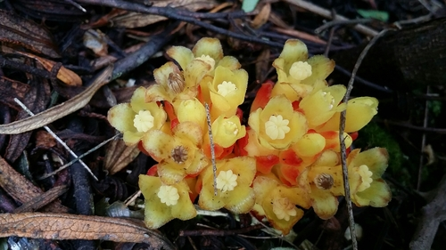

Cytinaceae
Cytinus Family
Cytinaceae is a small family of highly specialized flowering plants that are obligate endoholoparasites. Lacking chlorophyll, stems, and roots, their vegetative body lives entirely within the tissues of host plants (often Cistaceae or Burseraceae). They only become visible externally when they produce short, fleshy, often brightly colored inflorescences directly from the host's roots or stems. The family belongs to the order Malvales.
Overview
The Cytinaceae family comprises two genera, Cytinus (Mediterranean, South Africa, Madagascar) and Bdallophytum (Mexico, Central America), with a total of about 10-13 species. These plants represent an extreme form of parasitism where the entire vegetative existence occurs as undifferentiated tissue within the host plant, drawing all sustenance from it. They lack any photosynthetic capability.
The only part of the plant that emerges is the reproductive structure: a compact, fleshy inflorescence bearing numerous small, unisexual flowers. These inflorescences are often brightly colored (red, yellow, white) and are subtended by scale-like bracts. The family shows remarkable adaptations to its parasitic lifestyle, including highly reduced morphology and specialized reproductive biology. Phylogenetically, Cytinaceae is placed within the Rosid order Malvales, related to families like Malvaceae and Cistaceae.
Species like Cytinus hypocistis have been known since antiquity and used in traditional medicine, though their true parasitic nature and phylogenetic affinities were only clarified relatively recently.
Quick Facts
- Scientific Name: Cytinaceae A.Rich.
- Common Name: Cytinus Family
- Number of Genera: 2 (Cytinus, Bdallophytum)
- Number of Species: Approximately 10-13
- Distribution: Mediterranean, S Africa, Madagascar (Cytinus); Mexico & Central America (Bdallophytum).
- Evolutionary Group: Angiosperms - Eudicots - Rosids - Malvales
- Habit: Achlorophyllous endoholoparasite (parasitizing roots or stems)
Key Characteristics
Growth Form and Habit
Plants are achlorophyllous (lacking chlorophyll) obligate endoholoparasites. The vegetative body is reduced to filamentous or tuberous tissue living entirely inside the host root or stem, connected via haustoria. They lack stems, roots, and photosynthetic leaves. The only external structure is the reproductive inflorescence.
Leaves
True leaves are absent. The structures resembling leaves are non-photosynthetic, often brightly colored, scale-like bracts arranged spirally, subtending the inflorescence and individual flowers. They lack stipules.
Inflorescence
The inflorescence emerges directly from the host tissue (roots or stems) and is a short, dense, fleshy spike or head. It is surrounded and interspersed with numerous scale-like bracts.
Flowers
Flowers are small, densely packed on the inflorescence axis, unisexual (plants usually monoecious, sometimes dioecious), and radially symmetrical (actinomorphic). They are often brightly colored.
- Perianth: Consists of a single whorl of 4-9 tepals that are fused below into a tube (perianth tube) and form distinct lobes at the apex. The perianth is often petaloid (colored) and is the most conspicuous part of the flower.
- Androecium (Male flowers): Stamens (effectively 8 to many) are fused together into a central column known as a synandrium. The pollen sacs (microsporangia) are located near the apex of this column.
- Gynoecium (Female flowers): Features an inferior ovary composed of several (e.g., 4-8) fused carpels, forming a single chamber (unilocular). Ovules are numerous, attached to intrusive parietal placentas (partitions extending inwards from the ovary wall) or scattered within the locule. A single, columnar style arises from the ovary, topped by a often capitate (head-like) or lobed stigma. Nectar is often secreted around the style base or ovary apex.
Fruits and Seeds
The fruit develops from the entire female flower cluster and is a fleshy, indehiscent berry (or technically, a berry-like syncarp). It contains numerous, minute seeds embedded in pulp. Seeds have endosperm.
Chemical Characteristics
Plants lack chlorophyll but contain other pigments like anthocyanins, giving them their red, yellow, or white colors. They produce various secondary metabolites, some likely involved in host interactions or defense, and historically attributed medicinal properties (e.g., tannins).
Field Identification
Identifying Cytinaceae requires spotting their unique emergent inflorescences, typically near or on their specific host plants:
Primary Identification Features
- Fleshy, brightly colored inflorescence: Look for short, dense spikes or heads (often red, yellow, or white) emerging directly from the ground near host roots or from host stems/branches.
- Lack of green color, stems, and leaves: The emergent structure is entirely non-photosynthetic and lacks typical plant organs.
- Scale-like bracts: The inflorescence is covered in overlapping, scale-like bracts, often similar in color to the flowers.
- Dense cluster of tiny flowers: Close inspection reveals numerous small, unisexual flowers packed together.
- Association with specific hosts: Cytinus is typically found parasitizing Cistaceae (Cistus, Halimium) or Asteraceae in South Africa. Bdallophytum parasitizes Burseraceae (Bursera).
Secondary Identification Features
- Habitat: Often found in Mediterranean scrub (garrigue, maquis), dry habitats, or tropical dry forests where hosts occur.
Seasonal Identification Tips
These plants have a very short visible period:
- Flowering Season (Often spring/early summer, varies): This is the only time the plant is visible above ground (or outside the host). The inflorescences emerge, flower, and set fruit relatively quickly.
- Year-round: Locating known host plants in the appropriate region is the best way to search for Cytinaceae during their emergence season.
Common Confusion Points
Distinguishing Cytinaceae from other emergent structures or parasites:
- Fungi: Some fungi can be brightly colored and emerge from the ground, but they lack scale leaves (bracts) and the organized structure of tiny flowers seen in Cytinaceae.
- Cynomoriaceae (Cynomorium): Also a reddish, fleshy parasite emerging from the ground in similar habitats (Mediterranean/Asia), but its inflorescence structure differs (e.g., flowers embedded among hairs, different floral details), and it belongs to Saxifragales.
- Orobanchaceae (Broomrapes): Many are holoparasites, but they typically emerge with a more recognizable stem bearing scale leaves and distinct, often bilaterally symmetric flowers (snapdragon-like).
- Balanophoraceae / Rafflesiaceae: Other highly specialized holoparasites, but generally differ significantly in floral structure, inflorescence morphology, host range, and geographic distribution. Rafflesiaceae have giant individual flowers.
- Focus on the combination: Endoparasite + Fleshy Brightly Colored Emergent Spike/Head + Scale Bracts + Tiny Unisexual Flowers (fused perianth, synandrium/inferior ovary) + Specific Hosts (Cistaceae/Burseraceae) = Cytinaceae.
Field Guide Quick Reference
Look For:
- Fleshy, short spike/head emerging from host/ground
- Bright colors (red, yellow, white), no green
- Covered in scale-like bracts
- Dense cluster of tiny unisexual flowers
- Perianth fused into tube with lobes
- Male: Stamens fused (synandrium)
- Female: Inferior ovary
- Parasitic on specific hosts (e.g., Cistus, Bursera)
Key Variations:
- Inflorescence color varies
- Host specificity defines genera/species
- Distribution (Mediterranean/Africa/Madagascar vs. Americas)
Notable Examples
The two genera contain a small number of species:

Cytinus hypocistis
Cytinus / Hypocist
Found in the Mediterranean region, parasitizing the roots of Cistaceae shrubs (Cistus and Halimium). Produces short, dense heads of yellow flowers surrounded by reddish bracts, emerging near the base of the host plant.

Cytinus ruber
Red Cytinus
Also found in the Mediterranean, parasitizing Cistaceae. Similar to C. hypocistis but typically has bright red flowers and bracts. Often considered a subspecies or variety of C. hypocistis by some botanists.

Bdallophytum americanum
(No common name)
Found in Mexico and Central America, parasitizing the roots and sometimes lower stems of trees in the Burseraceae family (e.g., Bursera). Produces larger, more elongated, fleshy inflorescences compared to Cytinus.
Phylogeny and Classification
Cytinaceae's evolutionary placement was uncertain for a long time due to its highly reduced parasitic morphology. However, molecular phylogenetic studies have now confidently placed it within the order Malvales, nestled among the Rosid clade of eudicots.
Within Malvales, Cytinaceae represents an independent origin of endoholoparasitism. Its closest relatives are thought to be non-parasitic families, possibly Muntingiaceae or families within the broader Malvaceae s.l. (sensu lato) group. This placement highlights the remarkable evolutionary plasticity within the Malvales, an order better known for families like Malvaceae (cotton, hibiscus, cacao), Cistaceae (rockroses - ironically, hosts for Cytinus), Dipterocarpaceae (tropical timber trees), and Thymelaeaceae (daphne).
Position in Plant Phylogeny
- Kingdom: Plantae
- Clade: Angiosperms (Flowering plants)
- Clade: Eudicots
- Clade: Rosids
- Order: Malvales
- Family: Cytinaceae
Evolutionary Significance
Cytinaceae provides fascinating insights into plant evolution:
- Extreme Parasitic Reduction: Demonstrates the extent of morphological simplification possible in the evolution of endoholoparasitism, losing roots, stems, leaves, and chlorophyll.
- Convergent Evolution: Shares features with other unrelated parasitic groups (e.g., lack of chlorophyll, reduced morphology), showcasing convergent adaptations to a parasitic lifestyle.
- Phylogenetic Placement: Its position within Malvales highlights that extreme parasitism can evolve from non-parasitic ancestors within major flowering plant orders.
- Host-Parasite Interactions: Offers a model system for studying the complex molecular and physiological interactions between parasitic plants and their hosts.